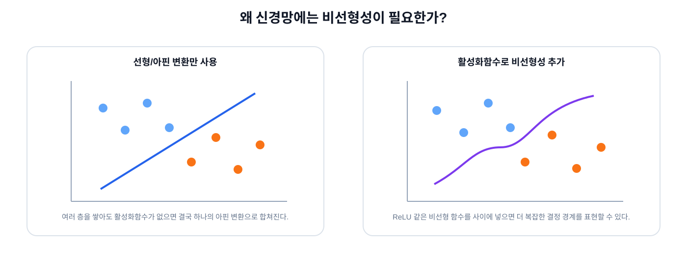

Lecture 02 · AI Fundamentals
AI는 어떻게 데이터에서 규칙을 배울까?
CNN을 보기 전에 AI·머신러닝·딥러닝의 관계부터 지도학습, 신경망, 비선형성, 학습, Dataset과 평가까지 연결해서 봅니다.
Data → Model → Prediction → Loss → Learning → Generalization
1

AI, Machine Learning, Deep Learning은 어떻게 다를까?
CNN은 Deep Learning 모델이고, Deep Learning은 Machine Learning의 한 갈래입니다.
2
규칙을 사람이 직접 쓰는 것 vs 데이터에서 배우는 것
전통적인 Rule-based 방식
사람이 규칙 작성
if 밝기 > 100
and 면적 > 50
→ abnormal
조건이 명확하면 강력하지만 복잡한 이미지에서는 규칙 수가 빠르게 늘어날 수 있습니다.
Machine Learning
Data + Label
↓
Model Training
↓
Weight 학습
↓
Prediction
모든 규칙을 사람이 직접 쓰기보다 데이터에서 유용한 관계를 찾습니다.
3
AI는 어떤 방식으로 배울까?
SUPERVISED
지도학습
입력과 정답 Label을 함께 보며 입력→정답 관계를 학습합니다.
UNSUPERVISED
비지도학습
정답 Label 없이 데이터의 구조, 군집, 표현을 찾습니다.
REINFORCEMENT
강화학습
행동에 따른 보상을 이용해 더 좋은 행동 전략을 학습합니다.
이번 Vision AI 기초 강의에서는 지도학습을 중심으로 봅니다.
4

지도학습: 문제와 정답을 같이 본다
5
분류와 회귀
Classification · 분류정해진 범주 중 어느 Class인지 예측합니다.
Normal / Abnormal
Cat / Dog
Scratch / Particle / Normal
Regression · 회귀연속적인 숫자 값을 예측합니다.
거리 = 12.4 mm
온도 = 37.1 °C
위치 offset = 2.8 px
Vision AI에는 분류뿐 아니라 Detection의 좌표, 거리·각도 예측처럼 회귀 성격의 출력도 함께 등장합니다.
6
이진 분류와 다중 클래스 분류
Binary Classification두 선택지 중 하나를 고릅니다.
raw score
↓
Sigmoid
↓
Abnormal = 0.87
Multi-class Classification세 개 이상의 Class 중 하나를 고릅니다.
raw scores
↓
Softmax
↓
Normal 0.10
CaseA 0.75
CaseB 0.15
Sigmoid와 Softmax는 모델의 출력 점수를 해석하기 쉬운 값으로 바꾸는 데 자주 사용됩니다.
7
Model, Parameter, Hyperparameter
Input x
↓
Model f(x; θ)
↓
Prediction ŷ
Parameter학습 과정에서 모델이 스스로 바꾸는 값입니다. Weight와 Bias가 대표적입니다.
HyperparameterLearning Rate, Batch Size, Layer 수처럼 학습 전에 사람이 설정하는 값입니다.
Parameter → 모델이 학습
Hyperparameter → 사람이 설정/탐색
8

신경망의 가장 작은 직관: Perceptron
9
왜 Layer를 여러 개 쌓을까?
하나의 단순한 결정 경계로는 풀 수 없는 문제가 있습니다.
XOR
0,0 → 0
0,1 → 1
1,0 → 1
1,1 → 0
Hidden Layer입력과 출력 사이에서 새로운 Feature를 만드는 중간 Layer입니다.
Deep Neural Network여러 Hidden Layer를 가진 깊은 신경망입니다.
하지만 Layer만 많이 쌓는 것만으로는 충분하지 않습니다. 비선형성이 필요합니다.
10
왜 비선형성이 필요한가?
Activation Function 없이 Affine Layer만 여러 개 쌓으면 전체를 다시 하나의 Affine Transformation으로 합칠 수 있습니다.

11
Activation Function
Activation FunctionLayer 출력에 비선형성을 추가합니다.
ReLU(x) = max(0, x)
[-2, -0.5, 0, 1, 3]
↓
[ 0, 0, 0, 1, 3]
Linear / Conv
↓
Activation
↓
Linear / Conv
↓
Activation
↓
복잡한 Function
CNN에서는 ReLU, SiLU 같은 Activation이 널리 사용됩니다.
12
Feature와 Representation
Feature문제를 푸는 데 유용한 특징입니다.
Representation입력을 모델 내부에서 유용한 숫자 형태로 다시 표현한 결과입니다.
Raw Input
↓
Simple Feature
↓
Combined Feature
↓
Task에 유용한 Representation
13

“학습”은 Weight를 반복 수정하는 과정
14
Loss, Gradient, Backpropagation, Optimizer
LossPrediction과 정답 사이의 차이를 수치화합니다.
GradientWeight를 바꿨을 때 Loss가 어느 방향으로 변하는지 알려줍니다.
Backpropagation출력의 Loss에서 시작해 각 Weight의 Gradient를 계산합니다.
OptimizerGradient를 이용해 Weight를 실제로 수정합니다.
new_weight = old_weight - learning_rate × gradient
15
Batch, Iteration, Epoch
| 용어 | 의미 | 예시 |
|---|---|---|
| Batch | 한 번의 학습 Step에서 함께 사용하는 샘플 묶음 | 32 images |
| Iteration / Step | 한 Batch를 사용해 Weight를 한 번 Update | 1 update |
| Epoch | Train Dataset 전체를 한 번 사용 | 10,000장을 1회 |
10,000 images / batch 32
≈ 313 iterations
≈ 1 epoch
Mini-batch는 전체 Dataset을 한 번에 계산하지 않고 작은 묶음으로 나누어 학습합니다.
16

Dataset은 모델이 배우는 세상
17
Train / Validation / Test의 역할은 다릅니다
TRAIN
문제집
정답을 보며 Weight를 실제로 학습합니다.
VALIDATION
모의고사
모델 선택, Hyperparameter 조정, Overfitting 확인에 사용합니다.
TEST
최종 시험
가능한 한 마지막까지 보지 않고 일반화 성능을 평가합니다.
Validation을 계속 보며 선택하면 Validation에도 맞춰집니다. 그래서 최종 Test는 별도로 유지하는 것이 중요합니다.
18
좋은 Train 성능 ≠ 좋은 AI
UnderfittingTrain 데이터조차 충분히 학습하지 못한 상태입니다.
OverfittingTrain 데이터의 일반 패턴뿐 아니라 노이즈와 세부 특징까지 과하게 맞춘 상태입니다.
Generalization처음 보는 새로운 데이터에서도 잘 동작하는 능력입니다.
과적합 완화 방법
더 다양한 데이터 · 적절한 Data Augmentation · 모델 복잡도 조절 · Regularization · Early Stopping 등
더 다양한 데이터 · 적절한 Data Augmentation · 모델 복잡도 조절 · Regularization · Early Stopping 등
Data Leakage
같은 원본 영상의 거의 동일한 Frame이 Train/Test에 들어가면 성능이 실제보다 좋아 보일 수 있습니다.
같은 원본 영상의 거의 동일한 Frame이 Train/Test에 들어가면 성능이 실제보다 좋아 보일 수 있습니다.
19

실제 AI 개발은 학습 한 번으로 끝나지 않습니다
20
이제 CNN으로 연결합니다
Image Tensor
↓
Convolution
↓
Activation
↓
Feature
↓
Convolution
↓
더 복잡한 Feature
↓
Prediction
CNN의 Kernel도 Dataset을 통해 학습되는 Weight입니다.
CNN을 배우면 “이미지에서 어떤 특징을 어떻게 만들어 가는가?”를 구체적으로 볼 수 있습니다.